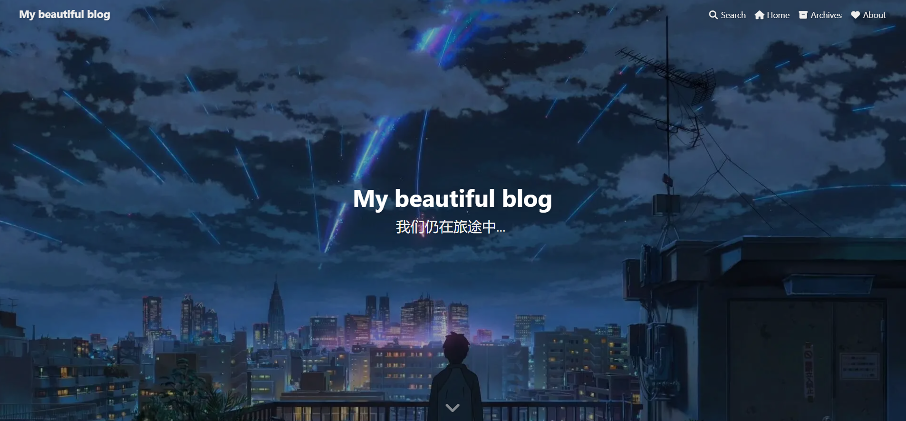

数据科学与工程学院暑期夏令营实践项目总结
数据科学与工程学院暑期夏令营实践项目总结
（一）博客主题及其选取原因
开始选取了Jeyll框架的相关主题，发现修改配置文件略复杂，故换成Hexo框架，Hexo是一款基于Node.js的静态博客框架，依赖少易于安装使用，可以方便的生成静态网页托管在GitHub上
我选取了butterfly主题，该主题较为清晰美观，且文档教程清楚易理解
（二）博客页面布局及其设计思路
页面布局总体沿用butterfly主题的框架，布局主要修改了相关文字、导航栏与各个页面的图像。
封面
添加了封面

导航栏
修改导航栏为搜索、主页、文章列表与关于我
搜索功能
支持关键字搜索文章
文章列表
关于我
侧边栏
具体文章
(三）博客制作过程中遇到的问题及其解决方法
① hexo d命令报错 ERROR Deployer not found: git，并且已经安装hexo-deployer-git插件
解决方案：在项目根目录下重新输入npm install hexo-deployer-git --save安装
② 要新建导航栏about，在source文件夹中直接新建文件夹无法新建导航栏
解决方案：在根目录下输入hexo new page "about"，然后修改source文件夹的about/index.md即可
③ 图片插入markdown文件后无法显示在网页中
该问题为Hexo常见问题，解决方法如下：
- 在git bash中输入：
1 | npm install https://github.com/CodeFalling/hexo-asset-image --save |
- 在博客根目录找到文件
node_modules/hexo-asset-image/index.js
将第58行代码：
1 | $(this).attr('src', config.root + link + src); |
改为：
1 | $(this).attr('src', src); |
在
_config.yml中将
post_asset_folder: false改成post_asset_folder: true在
source/_posts中创建和要插入图片的文件同名的文件夹，并把图片放入该文件夹
在要插入图片的文件中插入图片时，使用以下格式：
1 |  |
（假设图片为1.png）
（四）总结
数据科学与工程学院暑期夏令营实践项目是在之前云计算课程作用的基础上进一步改进的项目，在该项目的实践过程中，我进一步掌握了使用Hexo部署基于Github的博客网站的方法。总体而言，该项目是一项非常有实际意义的项目，部署博客网站也是科研道路上必不可少的技能。